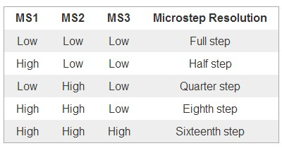

Input Devices
and
Output Devices
NOTE:- This is a combined assignment for both Input Devices and Output Devices modules, the input is the rotary switch and the output devices are the stepper or servo motors as well as the two LEDs.
For this week we are expected to experiment with input devices, to read some data from some sensor or some other source. We can use a wide variety of sensors available. The input can be as simple as a digital high/low state, or slightly complicated analogue signal which can be read using ADC, or more complicated serial communication protocols like I2C.
2-in one Stepper/Servo Tester with Rotary Switch.
As a first step, I plan to make a single board to control a stepper motor or a servo motor with a rotary switch as an input. The rotation of the switch will be read and the appropriate
motor will rotate in the corresponding direction. The built-in push button will be used to change the mode of operation, to begin with just two modes, one to control the
servo, another to control the stepper. There will be two LEDs to indicate various aspects like
..mode of operation
..direction of rotation etc.
Eagle files for download:->
Schematic. Board.
This is the picture of the completed board populated, except for the A4988 motor driver.
Notice the two extra wires, this is because I had to edit the board slightly, because I made a stupid mistake. I had connected the MOSI pin to the Rotary switch,
this has been causing a lot of trouble. As the MOSI pin is always kept high or low depending on the position of the Rotary switch. Because of this, the ISP
cannot program the board. So I had the following modification.
I also added a pull-up resistor for RST.
Modified (rev-1) Eagle files for download:->
Schematic. Board.Make the ATTINY44 Run at 8MHz Using the Internal RC Oscillator.
The ATTINY44 will, out-of-the-box, run at 1MHZ using the internal RC oscillator. The internal RC oscillator will always run at 8MHZ, out of the box and the chip is set to use a 1/8
scaling as the operating frequency, to change this we need to edit the fuse.
To operate the Attiny44 at 8 MHz using the internal oscillator the low fuse (lfuse) has to be changed to (from the default value of 0x62) 0xE2.
avrdude -P usb -b 19200 -c usbtiny -p t44 -U lfuse:w:0xE2:m

CKDIV8.
First step, Trying to use the Rotary Switch.
The first step is to get the Rotary switch to work. The Rotary switch has two power connectors, and three data lines, two for rotary switch and one for inbuilt push button. The outputs from the rotary switch is digital pulses. The other line for push button goes high when the button is pressed. The Push button is conneced to a current limiting, pull down resistor, but no denouncing capacitors. The same is true for the rotary outputs too.
From my research, I found that the rotary switch output lines change state when rotated by a step, though they are not in sync/phase. Both of the outputs change state when the position of the rotary switch change, though one of them toggle before the other one. Lets call the rotary switch outputs as 'A' and 'B'. The function is like this, the data line 'A' always toggles first when the knob is rotated clockwise, and the B toggles just a while after. When rotated counter-clockwise, 'B' toggles first followed by 'A', always. So we can detect the direction of rotation by checking which of the pins toggles first.
A few of the resources:-
http://www.allaboutcircuits.com/projects/how-to-use-a-rotary-encoder-in-a-mcu-based-project/
http://bildr.org/2012/08/rotary-encoder-arduino/
Using the Rotary Switch.
I found about a common method for using the rotary switch. Using the interrupts to detect if the device has been used or not, and then using a code (at interrupt vector) to detect the
direction of the rotation. One can use the following truth table to identify the direction of rotation.
image courtesy:
http://www.allaboutcircuits.com/projects/how-to-use-a-rotary-encoder-in-a-mcu-based-project/
If I have the rotary switch which works like above, there is a way to see if the rotation was clockwise or counter-clockwise. Assume that current pin states are A and B, and previous pin states are A' and B'. Now if we have a number of the form 0bXXXX A'B'AB, the values are unique
for each step. If you inspect, the last four bits will be.
0100, 0010, 1011, 1101 are for CW rotation.
1000, 0001, 0111, 1110 are for CCW rotation.
But if you think these are 8 possible combinations, which could be represented by just 3 bits, so lets see if we can simplify the patterns.
If we set the highest bit to zero, we get.
0100, 0010, 0011, 0101 are for CW rotation.
0000, 0001, 0111, 0110 are for CCW rotation.
in decimals, these values corresponds to
4, 2, 3, 5 are for CW rotation.
0, 1, 7, 6 are for CCW rotation.
I Could implement this using the below function
void update(void)
{
rotstat *= 4; //Shift bits to the left by 2 positions converting AB (from last postion) to A'B'
rotstat |= ( (PINA & 0b10000000) << 1); //set Rotary switch output A
rotstat |= ( (PINB & 0b00000010) << 0); //set Rotary switch output B
rotstat *= 0b00000111; //clear all bits but first three.
if ( rotstat < 2 || rotstat > 5) //Decide if the rotation was CW or CCW
{
step = 1; //+1 for CW
PORTA = 0b00100000; //turn LED on to indicate CW rotation
}
else
{
step = -1; //-1 for CCW
PORTA = 0b00000000; //turn LED off to indicate CCW rotation
}
}
But I made a logic of my own to use the rotary switch. It might have it's draw backs. The idea is to use both the interprets, and the fact that each step toggles both the pins, 'A' and 'B'. So we will have two interrupt vectors, one for each of 'A' and 'B', and we use 'PIN CHANGE INTERRUPTS (PCINT)', which will fire interrupt whenever there is a change of logical state in the pins where we enabled the 'pin change interrupts'. Though there we can enable PCINT on almost all digital pins, THERE ARE ONLY TWO, ACTUAL INTERPRET VECTORS for ATTINY44. In most AVR chips, in my best knowledge, there is only one actual external interrupt vector per port. So we can use two interrupts without any difficulty if we connect the pins to two separate ports. But if we are going to use the push-button too, it's going to be difficult. But for the time being, we can use it this way.
What I'm planning to do is to have an interrupt vector to set a flag skip and update the counter or do whatever action we are supposed to when we rotate the
encoder. The code is made to just skip the entire action if it sees that the flag skip has been set and clears it. This way for every step, even-though both
the interrupts get fired, action will be taken only for the first and sets the flag, the second interrupt vector just clears the flag. But when rotated the other way, the
second vector takes the action and sets the flag and the first vector just clears it, again only one action per step.
The code using the above logic to toggle a couple of LEDs.
#define F_CPU 8000000UL
#include <avr/io.h>
#include <avr/interrupt.h>
int skip = 0;
int main(void)
{
DDRA = 0b01100000; //Setting LED output pins
cli(); // disable global interrupts
//enble pin change interrupts on porta and portb
GIMSK|= (1&l&lPCIE0) | (1&l&lPCIE1); //PCCIR is GIMSK in attiny
//enable external interrupts for rotary switch
PCMSK0 |= (1&l&lPCINT7); //CLK or 'A' of Rotary
PCMSK1 |= (1&l&lPCINT9); //DT or 'B' of Rotary
sei(); // enable global interrupts:
while(1)
{ // my program }
}
ISR(PCINT0_vect)
{
if (skip == 1)
skip = 0;
else
{
PORTA = 0b00000000;
}
}
ISR(PCINT1_vect)
{
if (skip == 1)
skip = 0;
else
{
PORTA = 0b01100000;
}
}
Driving the Servo.
Driving the servo motor is actually quite easy, with arduino it's very easy, matter of just a few lines of code with all those built-in libraries. With C it's a bit more difficult, and if you goof up something while designing the circuit, well, it's even more so!
The servo expects 20ms or 50Hz pulse(50Hz for historical reasons ) with about 5-10% duty cycle, that is for 0 degree, we will sent pulses of 1ms on time every 20ms, for full 180 degree, we sent 2ms pulse every 20ms. More precisely it is, 1ms on and 19ms off for 0 degree and 2ms on and 18ms off for 180 degree. Though from my experience whats more important is the on time. The small variation in pulse frequency doesn't matter much as long as the on time remains intact, I think the servo measures the on time rather than the duty cycle.
So what did I mess up? Well, I should have connected the Servo to one of the pins which can have PWM pulses controlled by the 16-bit timer/counter, Timer1. The pin I presently connected
the servo to, is controlled by the 8-bit timer/counter, Timer0. The OC0A pin can have 8bit PWM when the Timer0 is used in PWM mode. But 8-bit resolution
is not enough to control the servo precisely, with 8-bit we can only have less than 10 discrete position between 0 and 180 deg. You might think that 8-bits give 256 values
but I'm saying only 8 are possible?. Actually we want a low duty cycle PWM and we don't have the luxury to use the full 256 values.
So, I could either use 8-bit timer or change the circuit or find some crazy way to actually make a 16-bit PWM with the current setup. First two options are too trivial and doesn't involve
much learning, I will be just doing what I already know. So I decided to make a 16-bit PWM with the current setup itself.
SPOILER:- it actually works.
Okay, I decided to use one of my old program, a blinking LED program made for Embedded Programming module. This program uses internal 16-bit timer/counter and internal interrupts when the timer reaches a particular value, to toggle the LEDs. Here I'm going to modify the program to have two interrupts at two preset values, both will toggle the status of the output pin of choice. This technique is effectively like a software implementation of PWM. The Timer1 can trigger two separate interrupts, on compare-match with two entries, OCR1A and OCR1B. So lets get to it, here is the program.
#define F_CPU 8000000UL
#include <avr/io.h>
#include <avr/interrupt.h>
int angle = 90;
int main(void)
{
DDRA = 0b01100000; //LED Pins
DDRB |= (1 << PB2); //Servo Pin
cli(); // disable global interrupts
TCCR1A = 0; // initialize Timer1 the 16bit timer
TCCR1B = 0;
TCCR1B |= (1 << CS11); // 1/8 prescaler:
OCR1A = angle*11+520; //scaling 0-180 to 520 to 2500, min 520=0deg 2500=180deg
OCR1B = 20000; //For 20ms cycle
TIMSK1 |= (1 << OCIE1A); // enable timer compare interrupt, on 'A'
TIMSK1 |= (1 << OCIE1B); // enable timer compare interrupt, on 'B'
sei(); // enable global interrupts:
while(1)
{ // my program }
}
ISR(TIM1_COMPB_vect)
{
PORTA = 0b01100000; //set LED pins
PORTB |= (1 << PB2); //set servo pin, at the beginning of the pulse
TCNT1 = 0; //reset the timer to begin the new cycle
}
ISR(TIM1_COMPA_vect)
{
PORTA = 0b00000000; //unset LED pins
PORTB = 0x00; //unset servo pin
}
ISR(TIM1_COMPA_vect) set the servo and ISR(TIM1_COMPB_vect) unset the
servo pin, the program doesn't work, reason is yet to be figured out. Of course I'm exchanging the initial values too.
I think the program is simple and self explanatory, the calculations for the timer values has been given in Embedded Programming module, not so complicated. But for some reason the actual required values are slightly off. I was expecting the values of OCR1A to be within 1000 and 2000, 1000 being equivalent for 0 degree, and 2000 for 180 degree. Well the actual values are off, 520 and 2500, found after trial and error. I need to access a DSO and find out what happened.
Controlling the Servo with the Rotary Switch
Now we can put the programs together so that we can rotate the knob to turn the servo back and forth. Here is the program which does this, it's just a combination of the previous two programs.
#define F_CPU 8000000UL
#include <avr/io.h>
#include <avr/interrupt.h>
int skip = 0;
int angle = 0;
int main(void)
{
DDRA = 0b01100000; //LED Pins
DDRB |= (1 << PB2); //Servo Pin
cli(); // disable global interrupts
TCCR1A = 0; // initialize Timer1 the 16bit timer
TCCR1B = 0;
TCCR1B |= (1 << CS11); // 1/8 prescaler:
//OCR1A = angle*11+520; //scaling 0-180 to 520 to 2500, min 520=0deg 2500=180deg
OCR1B = 20000; //For 20ms cycle
TIMSK1 |= (1 << OCIE1A); // enable timer compare interrupt, on 'A'
TIMSK1 |= (1 << OCIE1B); // enable timer compare interrupt, on 'B'
//enble pin change interrupts on porta and portb
GIMSK |= (1<<PCIE0) | (1<<PCIE1); //PCCIR is GIMSK in attiny
//enable external interrupts for rotary switch
PCMSK0 |= (1<<PCINT7); //CLK of Rotary
PCMSK1 |= (1<<PCINT9); //DT of Rotary
//PCMSK1 |= (1<<PCINT8); //push button of Rotary
sei(); // enable global interrupts:
while(1)
{
OCR1A = angle*11+520; //update timer values to control the PWM
}
}
ISR(TIM1_COMPA_vect)
{
PORTB = 0x00; //unset servo pin
}
ISR(TIM1_COMPB_vect)
{
PORTB |= (1 << PB2); //set servo pin
TCNT1 = 0; //reset timer to start the cycle over.
}
ISR(PCINT0_vect)
{
if (skip == 1)
skip = 0; //unset skip flag
else //update angle if skip flag is unset
{
angle -= 1;
PORTA = 0b00000000; //toggle LED pins
if (angle < 0) //keep the min angle at 0 degree
angle = 0;
skip = 1; //set skip flag
}
}
ISR(PCINT1_vect)
{
if (skip == 1)
skip = 0; //unset skip flag
else //update angle if skip flag is unset
{
angle += 1;
PORTA = 0b01100000; //toggle LED pins
if (angle > 180) //keep the max angle at 180 degree
angle = 180;
skip = 1; //set skip flag
}
}
Another Logic to Interpret Data From Rotary Switch
I had to do this because I found, on inspection with DSO, that the Rotary switch pulses are actually slightly different. During rotation, during each step, both the pins goes low and comes back to high, in another words the pins stays high, during the 'stable' positions of the rotary switch. Same with the push button, it normally stays high.
What you are seeing below is my drawing of the pulse generated at A and B, when the rotary switch transitions from one stable position to the next (not full 360 deg). Also assume that we enabled the pin-change-interrupt on A.
-
A ≠ Bfor CW andA = Bfor CCW. - First interrupt is always on falling edge, means
A = 0immediately after the first interrupt.
SO the interrupt code could be
if ( A == 0 )
if ( B == 1 )
step = 1; // CW rotation on A = 0 and B = 1
else // means B = 0
step = -1; // CCW rotation on A = 0 and B = 0
Code Using the Above Logic.
#define F_CPU 8000000UL
#include <avr/io.h>
#include <avr/interrupt.h>
void update(void); // function declaration
int angle = 90;
int step = 0 ;
int main(void)
{
DDRA = 0b01100000;
DDRB |= (1 << PB2);
cli(); // disable global interrupts
// initialize Timer1 the 16bit timer
TCCR1A = 0;
TCCR1B = 0;
OCR1B = 20000; // set compare match register to desired timer count:
TCCR1B |= (1 << CS11); // Use CS10, CS11 and CS12 bits for 1/8 prescaler:
// enable timer compare interrupt:
TIMSK1 |= (1 << OCIE1B);
TIMSK1 |= (1 << OCIE1A);
//enble pin change interrupts on porta and portb
GIMSK |= (1<<PCIE0) | (1<<PCIE1); //PCICR is GIMSK in attiny
//enable external interrupts for rotary switch
PCMSK0 |= (1<<PCINT7); //CLK of Rotary
//PCMSK1 |= (1<<PCINT9); //DT of Rotary
//PCMSK1 |= (1<<PCINT8); //push button of Rotary
sei(); // enable global interrupts:
while(1)
{
OCR1A = angle*11+520;
}
}
ISR(TIM1_COMPA_vect)
{
PORTB = 0x00;
}
ISR(TIM1_COMPB_vect)
{
PORTB |= (1 << PB2);
TCNT1 = 0;
}
ISR(PCINT1_vect)
{
}
ISR(PCINT0_vect)
{
if ((PINB & 0b00000001))
{
update();
PORTA ^= 0b01000000;
}
angle += step;
step = 0;
if (angle > 180)
angle = 180;
else if (angle < 0)
angle = 0;
}
void update(void)
{
if ( PINA & 0b10000000 )
if ( PINB & 0b00000010 )
{
step = 1; //+1 for CW
PORTA = 0b00100000;
}
else
{
step = -1; //-1 for CCW
PORTA = 0b00000000;
}
}
The Final Code for Controlling Servo, BLDC Motor ESC.
The following code will enable two modes of operation, which can be toggled using the push button. One of the mode is for fine adjustments and the other is for coarse. In coarse the
servo moves by 1 degree for every step of the rotary switch. In fine, one step if the rotary switch corresponds something a little less than 1/10th of a degree.
The program can be used to control the hobby
ESC (Electronic Speed Control) of
BLDC (BrushLess DC electric motor) too. The program is meant to
calibrate the ESC. This is because the board sends the full 'throttle' when it starts and the ESC will remember this and will wait for the minimum 'throttle'. Once you
push the button, the PWM immediately goes to a level corresponds to lowest 'throttle' level. This will calibrate the ESC.
#define F_CPU 8000000UL
#include <avr/io.h>
#include <avr/interrupt.h>
void update(void); // function declaration
/*
PA5 orange LED
PA6 Blue LED
PB2 Servo Pin
*/
int min = 520; //1554 for ESC and 520 for servo
int max = 2500; //1775 for ESC and2500 for servo
int servo_pos = 2500;
int step = 11;
int rot_dir = 0 ;
int calib = 1;
int sub_mod = 1; //sub_mod =1 for servo mode and 0 for ESC mod
int main(void)
{
DDRA |= (1 << PA6)|(1 << PA5); //blue led and Orange LED
DDRB |= (1 << PB2); //servo pin
cli(); // disable global interrupts
// initialize Timer1 the 16bit timer
TCCR1A = 0;
TCCR1B = 0;
// set compare match register to desired timer count:
//OCR1A = servo_pos*11+520; //min 520 0deg 2500 180deg
OCR1B = 20000;
// Use CS10, CS11 and CS12 bits for 1/8 prescaler:
TCCR1B |= (1 << CS11);
// enable timer compare interrupt:
TIMSK1 |= (1 << OCIE1A);
TIMSK1 |= (1 << OCIE1B);
//enble pin change interrupts on porta and portb
GIMSK |= (1<<PCIE0) | (1<<PCIE1); //PCICR is GIMSK in attiny
//enable external interrupts for rotary switch
PCMSK0 |= (1<<PCINT7); //CLK of Rotary
PCMSK1 |= (1<<PCINT8); //push button of Rotary
sei(); // enable global interrupts:
while(1)
{
OCR1A = servo_pos;
}
}
ISR(TIM1_COMPA_vect)
{
PORTB = 0x00;
}
ISR(TIM1_COMPB_vect)
{
PORTB |= (1 << PB2);
TCNT1 = 0;
}
ISR(PCINT1_vect)
{
if (PINB & 0b00000001)
{
if (sub_mod)
{
PORTA &= ~ (1 << PA6); //clear LED
step = 11;
sub_mod = 0;
}
else
{
PORTA |= (1 << PA6);
step = 1;
sub_mod = 1;
}
if (calib)
{
servo_pos = min;
calib = 0;
}
}
}
ISR(PCINT0_vect)
{
if (PINB & 0b00000001) //if push button is not pressed and held
update();
servo_pos += rot_dir;
rot_dir = 0;
if (servo_pos > max)
servo_pos = max;
else if (servo_pos < min)
servo_pos = min;
}
void update(void)
{
if ( PINA & 0b10000000 )
if ( PINB & 0b00000010 )
{
rot_dir = step; //+1 for CW
PORTA &= ~ (1 << PA5);
}
else
{
rot_dir = -1*step; //-1 for CCW
PORTA |= (1 << PA5);
}
}
Stepper
Controlling the stepper motor with the Micro-Controller and the A4988 driver is very easy. At bare minimum, the driver need only two inputs from the Micro-Controller,
- Step:- This is input is given as pulses, the frequency of which determines the rotational frequency of the motor, and the number of pulses corresponds to number of steps. So if we need the stepper to move 10 steps, we just give 10 pules, and the rate at which we give the pulse determines how fast the stepper moves those 10 steps.
- Dir:- This controls the direction in which the stepper moves. This pin can be High or Low, and obviously high and low corresponds to the CW and CCW rotations.
MS1, MS2, MS3:- Micro-stepping selection
Normally low, could be set high as per the table to enable micro-stepping for higher resolution movements.
 zoom-in; single click => normal size" ondblclick="this.width='700'" onclick="this.width='500'">
Enable:- (Normally Low) Setting this Pin High, will disable the FETs in the chip, killing the power to the motor.Sleep:- (Normally High) Set this pin Low to put the chip in sleep mode to save power when the Motor/Chip is not in use.Reset:- (Normally Floating) This is a floating pin and should be kept high to use the motor normally, when set low the motor shall return to the original position the motor was in when the chip was turned on. Should refer to the Data-sheet for more information. If this pin is low all STEP signals are ignored.
Below is the Code For Controlling the Speed and Direction of the Stepper Motor Using the Rotary Switch.
#define F_CPU 8000000UL
#include <avr/io.h>
#include <avr/interrupt.h>
/*
PA0 dir
PA1 step
PA2 sleep
PA3 reset
PA4 enable
PA5 orange LED
PA6 Blue LED
Rotate the knob to adjust the speed of rotation and use the built-in push-button to toggle the direction.
*/
int temp = 20000;
int step = 1000;
void update(void);
int main(void)
{
DDRA |= (1 << PA6) | (1 << PA5) | (1 << PA4) | (1 << PA3) |(1 << PA2) | (1 << PA1) | (1 << PA0);
PORTA |= (0 << PA5); //orange led
// initialize Timer1 the 16bit timer
cli(); // disable global interrupts
TCCR1A = 0;
TCCR1B = 0;
// set compare match register to desired timer count:
OCR1A = temp;
TCCR1B |= (1 << WGM12); // turn on CTC mode:
TCCR1B |= (1 << CS11); // Use CS10, CS11 and CS12 bits for 1/8 prescaler:
// enable timer compare interrupt:
TIMSK1 |= (1 << OCIE1A);
//enble pin change interrupts on porta and portb
GIMSK |= (1<<PCIE0) | (1<<PCIE1); //PCICR is GIMSK in attiny
//enable external interrupts for rotary switch
PCMSK0 |= (1<<PCINT7); //CLK of Rotary
PCMSK1 |= (1<<PCINT8); //push button of Rotary
sei(); // enable global interrupts:
PORTA |= (1<<PA3) | (1<<PA2); //sleep and reset
PORTA |= (0 << PA4); //enable
while(1)
{
OCR1A = temp;
}
}
ISR(TIM1_COMPA_vect)
{
PORTA ^= (1<<PA1);
PORTA ^= (1<<PA5);
}
ISR(PCINT1_vect)
{
if ((PINB & 0b00000001))
{
PORTA ^= (1<<PA6);
PORTA ^= (1<<PA0); //change direction on push button
}
}
ISR(PCINT0_vect)
{
if ((PINB & 0b00000001))
update();
}
void update(void)
{
if ( PINA & 0b10000000 )
if ( PINB & 0b00000010 )
temp -= step;
else
temp += step;
step = temp/30;
if (temp > 25000)
temp = 25000;
if (temp < 600)
temp=600;
if (step < 10)
step = 10;
}
The Code in Action
Here is a video from my
Final Project. This circuit with the above code is used to drive the stepper motor. The rotary switch is turned CW to increase the speed of rotation, CCW for decreasing
the same and pushing the button will change the direction of the rotation.
Fixing the wrong FUSE settings.
AT one stage I accidentally flashed the chip with a FUSE setting that makes the chip to use external clock source, but as you can see I don't have an external clock source and I have
used almost all pins on the chip including the pins where we would connect the external crystal/resonator. What happened was, instead of setting the lfuse as
0xE2 or 0x62 which would use internal clock, I accidentally set the fuse to 0xFF which makes the chip to wait for external clock.
Once this was done there is no easy way back, the chip now requires external clock to function. So I had to give it one. I could use
- a function generator to give external clock
- or an external crystal/resonator
De-bouncing.
The bouncing effect happens with almost every mechanical switches, the contact will become permanent only after some bouncing. As the name suggests, when you make contact it's not made instantly, it settles down only after a few bouncing around. This causes multiple inputs or in-case of interrupts, will fire multiple interrupts instead of one. There are multiple solutions to de-bounce, you can do it in software by introducing a delay after the first input to ignore all the following bounces, or make the program to skip all the inputs except for the first one, coming in a very short time, which would be improbable to be done by a human.
Another solution is hardware based, a capacitor of the right value, to smooth-out any short pulses. The capacitance cannot be too high as the capacitor will take a long time to get
charged and once it does, it maintains that charge for some time, this will result in poor response time and will also skip inputs if given too fast. Too small capacitance
will not fix the bouncing issue. Generally 100 nF capacitor is recommended. So I soldered three 100 nF 0805 capacitors I had in my
personal inventory (FabLab do not have 100nF) to the two rotary output pins and the push button pin of the rotary switch. I also put a bit of hot-melt-glue to keep them
in place. The capacitors were all connected between the corresponding pins and GND.